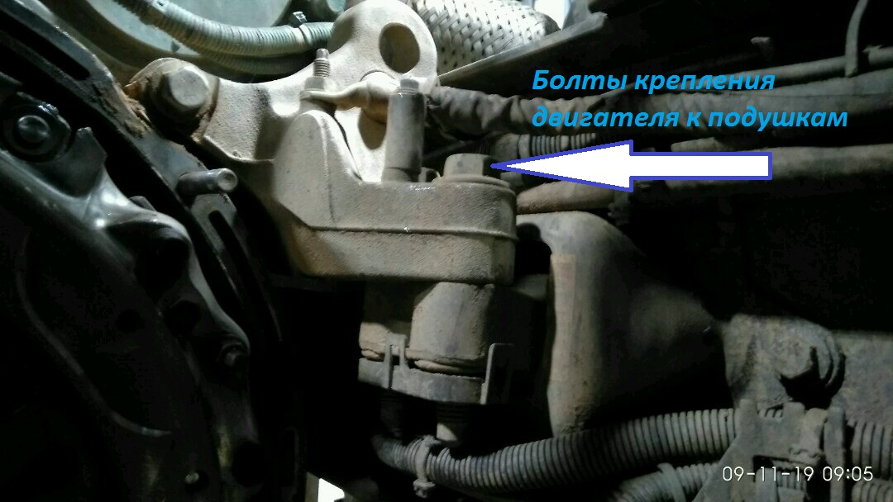
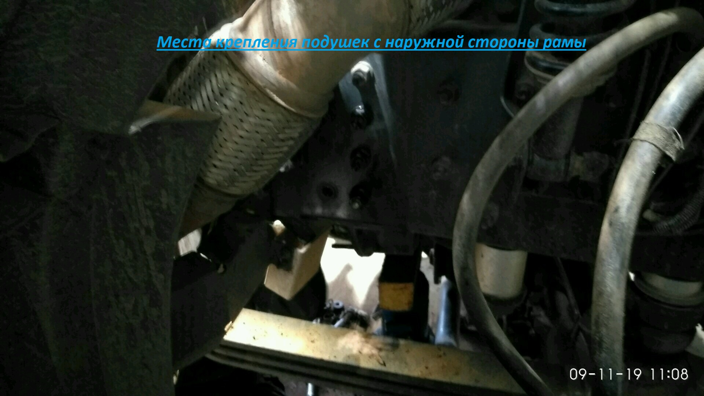

Реклама
Замена задних подушек крепления двигателя
Время выполнения:
? часов.Инструмент:
- Домкрат
- Ключ *21
- Ключ *18
- Ключ торцовый или головка *18
- Ключ торцовый или головка *21
- Ключ торцовый или головка *10
Порядок действий:
- Поставить противооткаты
- Поднять кабину.
- Открутить массу и всю периферию, что может мешать(по ситуации, снять пластиковые хомуты с проводки уложенной вдоль рамы)
- Установить под двигатель домкрат, подложив доску или что то мягкое, что бы не повредить кожух маховика двигателя.
- Поддомкратить для начала немного.
- Открутить болты крепления двигателя к подушкам - 4 шт. Откручивали большим гайковёртом для колёс.Смотреть картинку 07
- Открутить болты крепления подушки с 2-х сторон двигателя - 6 шт. Смотреть картинку 04 Работать вдвоём. Один держит гайки с наружной стороны рамы, другой гайковёртом откручивает болты с внутренней стороны. Либо наоборот, в зависимости от ситуации. Снимется достаточно не сложно, в отличие от установки.
- Устанавливаем новые подушки.
- В одном месте возникнет проблема. Это правая подушка. Верхний с левой стороны подушки болт. Смотреть картинку 06
- Чтобы поставить этот болт на место, двигатель нужно будет помаленьку домкратить, до тех пор пока не появится достаточно место для того что бы головка болта смогла пройти в зазор между двигателем и рамой автомобиля. Понадобятся пассатижи или круглогубцы, либо ловкие сильные пальцы рук. Также понадобится возможно магнит, типа такого Смотреть картинку 10 .
- Один человек изнутри рамы, пытается просунуть болт в отверстие. Другой человек с наружной стороны, пытается магнитом затянуть этот болт в отверстие. Получилось со второго раза.
- Протягиваем болты крепления подушек. Не все болты можно будет держать с другой стороны, что бы не проворачивались. Для этого на конце болта есть фаска под ключ на ?. Одним ключом держим болт за эту фаску, другим накручиваем гайку до упора. Протягиваем гайковёртом. Прокручиваться не будет.
- Устанавливаем на место массу, провода, хомуты.
- Опускаем домкрат
- Опускаем кабину.
Полезные ссылки по теме:


